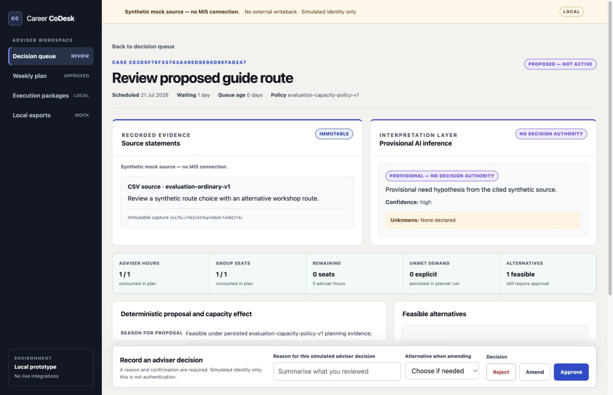
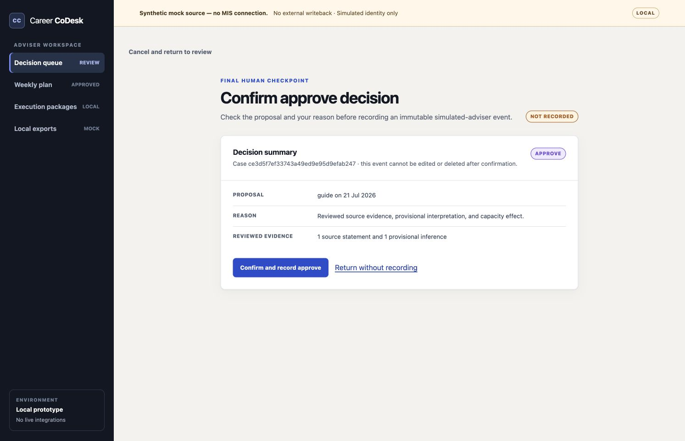
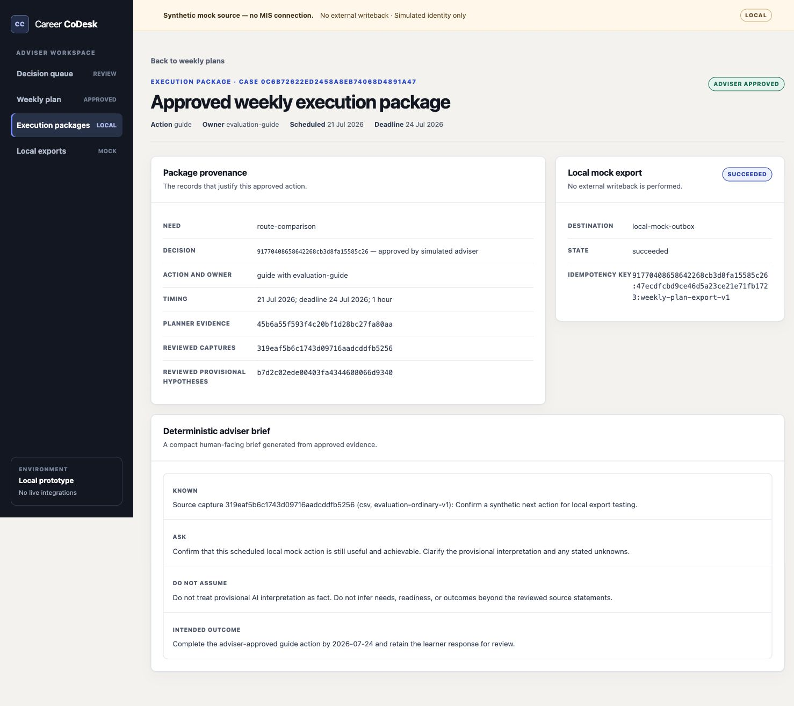
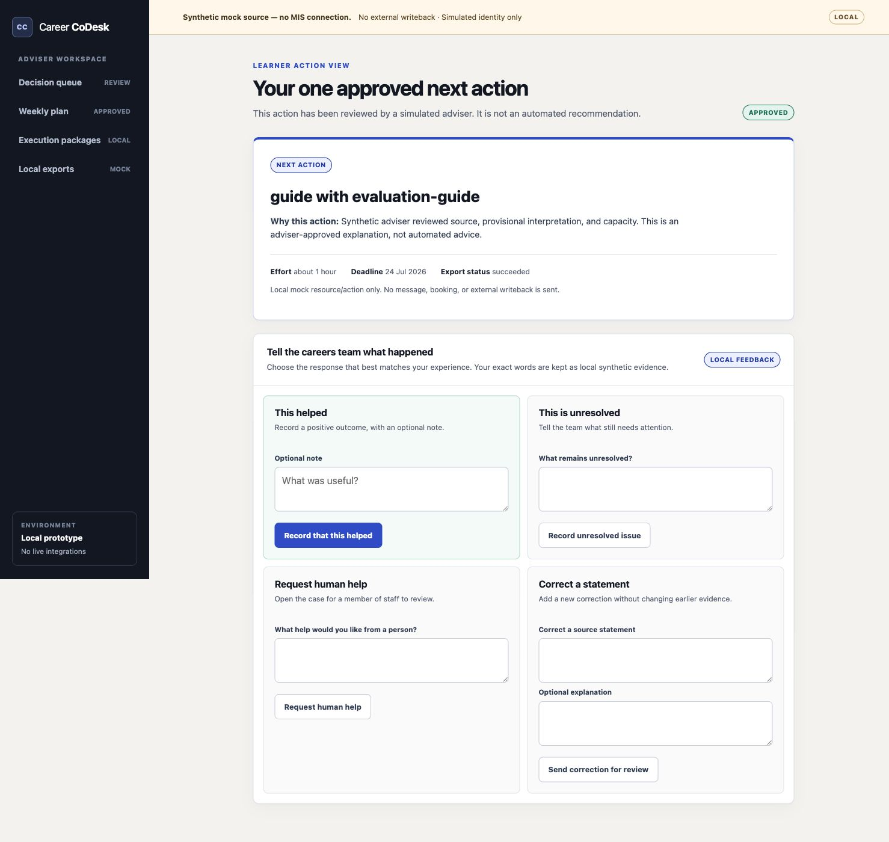

Guide
Narrows the task to its acceptance criteria.
0:00 to 0:15 | The problem
Career CoDesk is a local, synthetic decision workspace for capacity-aware and adviser-approved careers support.
0:15 to 0:50 | Live demo

0:50 to 1:30 | Live demo

1:30 to 2:10 | Live demo


2:10 to 2:45 | How it was built
Narrows the task to its acceptance criteria.
Works only inside an isolated task worktree.
Tests and checks decide whether code passes.
Checks the exact candidate tree, read-only.
Product direction and final scope stay human-owned.
Codex ran the workflow locally. No application API integration or API credits were required.
2:45 to 3:00 | Evidence and close
Synthetic data only. No live MIS, real learner data, external writeback, production authentication or compliance claim. The project tests whether careers teams can make a better capacity-aware decision without giving AI decision authority.